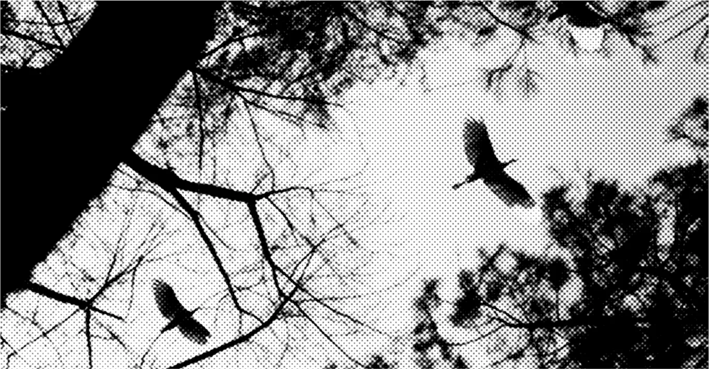

Миграция птиц и изменение климата
Миграция птиц — это сложное явление, которое тесно связано с изменением климата. Изменения температуры и погодных условий влияют на маршруты и время перелетов птиц, что может привести к несоответствию между прибытием птиц и доступностью пищи. Это явление наблюдается во всем мире и имеет важные последствия для экосистем.
Влияние климатических моделей
Исследования NASA показали, что миграция птиц в США связана с крупномасштабными климатическими моделями, такими как температуры океана и атмосферные волны (Россби). В западной части страны птицы мигрируют раньше из-за повышения температуры в Тихом океане, а в восточной части — под влиянием Россби волн, которые переносят теплый воздух из тропиков в полярные регионы[1][9].
Сдвиги в миграционных маршрутах
Климатические изменения заставляют птиц адаптироваться и менять свои миграционные маршруты. Например, некоторые виды птиц, такие как розовоголовые гуси, изменили свои маршруты в Норвегии, что привело к образованию новых популяций[4]. Другие виды, такие как Richard’s pipits, теперь мигрируют на запад вместо традиционного пути на юг[8].
Фенологические несоответствия
Изменение климата приводит к фенологическим несоответствиям, когда птицы прибывают на места гнездования раньше или позже, чем обычно. Это может привести к тому, что птицы не находят необходимую пищу, что негативно влияет на их размножение и выживание[6][7].
Что в итоге?
Миграция птиц — это чувствительный индикатор изменений климата, и понимание этих изменений имеет важное значение для сохранения птиц и их среды обитания. Анализируя миграционные маршруты и поведение птиц, ученые могут лучше подготовиться к последствиям климатических изменений и разработать эффективные стратегии защиты этих важных компонентов экосистем.